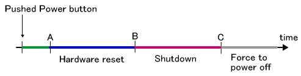
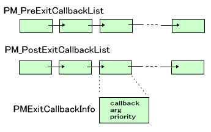
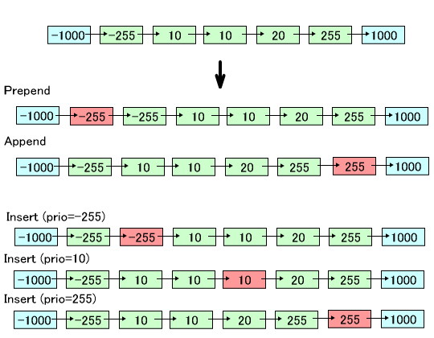

このページは TWL ハードウェアでの動作に関わる説明となります。
TWL ではアプリケーションが終了する状況として以下のものがあります。
このようにアプリケーションが「終了」する状況は様々ですが、終了処理という観点で考えるべきは、ハードウェアリセット または シャットダウン が発生する状況です。以下この2点に絞って説明します。
- ハードウェアリセット
- ・電源ボタンを短押しする
・PM_ForceToResetHardware()を呼び出す
これには、OS_RebootSystem()、OS_JumpToSystemMenu()、OS_JumpToWirelessSetting()、OS_JumpToInternetSetting()、OS_JumpToEULAViewer()といった、内部でPM_ForceToResetHardware()を利用した関数も含まれます。これらを行うことでハードウェアリセットが発生します。ハードウェアリセット処理を行うとその後はシステムメニューに戻ったり、再び自身を起動したり、別のアプリケーションを起動したりします。
- シャットダウン
- ・電源ボタンを長押しする
・OS_ForceToPowerOff()を呼び出す
・充電池の電池残量がなくなる
・スリープ中にカードが抜ける
こうした行為や状況ではシャットダウンが発生します。シャットダウン処理を行うと電源はオフ状態になります。(ただし、終了処理の必要のないアプリでは終了処理を行わずに電池を使い切るまで動作するため、急に電源が落ちるように見えます。)
- プログラムの停止(永久ループ)
OS_Panic()やOS_Terminate()やOS_Exit()を呼び出すと、アプリケーションは停止します。実際はCPU を HALT 状態にしたりループしたりしてそれ以上アプリケーションが意味のある動作をしないようにしているだけです。DEBUG ビルドに限りますが、SDK_ASSERT()で評価式が偽となって停止する場合も同様です。ただしこれらはすべて開発途中でデバッグ用途で呼び出したり、プログラム上の不具合で呼び出されるものなので、製品版になってからこの状態になることは一点を除いてないはずです。唯一あるのは、アプリケーション動作中にカードが抜けた場合で、このとき内部ではOS_Terminate()が呼ばれます。
- デバッガによる停止
- IS-TWL-DEBUGGER で動作させている場合に、誤ったアドレスをアクセスしたり未定義命令を実行しようとして例外が発生するとプログラムは停止します。実機で例外が発生した場合は例外ハンドラの中でループします。どちらにしても製品版では起こらないはずです。また当然ですが、開発者がプログラムを実行していてデバッガの停止ボタン押せば例外が発生しなくても停止します。
- その他
- 充電池で動作しているときに電池蓋を外していきなり充電池を取り除けば、電源供給がないため電源が落ちます。その他ハードウェアの故障など予測できない要因で停止する場合があるかもしれません。これらについてここでは考慮していません。
TWL では、電源ボタンを一定時間以上押して離すとその時間によって、ハードウェアリセット、シャットダウン、強制電源オフのいずれかが発生します。
下の図で説明します。電源ボタンを押して 時間A までに離せば何も起こりませんが、A から B の間に離せばハードウェアリセット、B から C の間で話せばシャットダウン、C を超えて電源ボタンを押し続けていると即座に強制電源オフとなります。この強制電源オフだけ、ボタンを離さなくても発生します。

なお、NITRO ハードウェアでは電源ボタンを押すと、押している時間に関係なくすぐに電源オフとなります。
また、内部で PM_ForceToResetHardware() を呼び出す OS_RebootSystem()、 OS_JumpToSystemMenu()、OS_JumpToWirelessSetting()、OS_JumpToInternetSetting()、 OS_JumpToEULAViewer() といった関数を呼び出した場合、確実にリセットが行われる状況になった後は電源ボタンによるハードウェアリセットが無視されます。
終了コールバックは、
typedef void (*PMGenCallback) (void *);
で定義されるように、void* 引数を一つとる void 型関数です。
ハードウェアリセットやシャットダウンが発生したときはこの終了コールバックが呼ばれます。終了コールバックは複数登録することが可能で、内部ではリスト形式で結合され、必要なときに順番に呼び出されます。前処理終了コールバックと後処理終了コールバックの2つが存在します。
なお、終了コールバックの処理は一度しか行われません。例えば電源ボタンを押したり電圧低下などが原因で終了コールバックの処理をしている最中に、電源ボタンを押しなおしたとしてもそれは無視されます。

2つのコールバックリストの関数がどのタイミングで呼ばれるかを説明します。
前出「電源ボタンについて」の図で、電源ボタンを押したまま時間A が来たときにマイコンからARM7 に割込みが入ります。この時点ではまだハードウェアリセットとなるか、シャットダウンとなるかはわかりませんが、ともかくアプリケーションが終了することは確定です。
ただし、PM_SetAutoExit() によって自動終了しない設定になっていた場合、3. の動作(ARM9 がARM7 に終了準備完了通知を送る)
は、アプリケーションがPM_ReadyToExit() を呼び出すまで保留されます。PM_ReadyToExit() が呼ばれると、その中で後処理コールバックを呼び出し、ARM7 に終了準備完了通知を送ります。現在の設定がどうなっているかは PM_GetAutoExit() で取得することが出来ます。
すなわち、
PM_ReadyToExit() から呼ばれます。なので、PM_ReadyToExit() と同じモードでの呼び出しになります。
ということになります。
二点例外が存在します。まず、アプリケーションジャンプを使用する関数を呼び出した後に電源ボタンが押された場合です。この場合アプリケーションジャンプはキャンセルして電源ボタンを押したときの処理に移ります (ボタンを離すタイミングにより、ハードウェアリセットかシャットダウンを行います) が、前処理コールバックは呼ばれず後処理コールバックのみが呼ばれます。これはアプリケーションジャンプを使用する前にユーザがすでに前処理コールバックに該当する処理を行っているはずであるからです。もう一点は、アプリケーションジャンプを使用する関数を呼び出して実際にリセットがかかるまでにバッテリーの低下をマイコンが検出した場合です。この場合も前処理コールバックは呼ばれずにバッテリー低下によるシャットダウン処理に移ります。
詳細は、「概要：バッテリー」の「電池残量低下によるシャットダウン」を参照してください。
この場合、内部的には、マイコンから ARM7 に割込みが入ります。ARM7 はARM9 に終了通知を行い、あとは電源ボタンを押したときと同様の終了コールバック呼び出しが行われます。ただし、終了処理を必要としないカードのようなアプリケーションではこの終了処理は行われません (割り込みが発生しません)。
後処理コールバックリストに登録されたコールバックが呼ばれます。その後ハードウェアの電源を落とします。
前処理コールバックは呼ばれません。
後処理コールバックリストに登録されたコールバックが呼ばれます。その後ハードウェアリセットを行います。
前処理コールバックは呼ばれません。
コールバックには優先度が設定されています。アプリケーションで使用できる優先度は
-255 (PM_CALLBACK_PRIORITY_MIN) 〜 255 (PM_CALLBACK_PRIORITY_MAX) です。( SDKライブラリやミドルウェアなど、システムでは -65535 (PM_CALLBACK_PRIORITY_SYSMIN) 〜65535 (PM_CALLBACK_PRIORITY_SYSMAX)の優先度を用いることができます。) この優先度はコールバックリストの順序を決定するのに用いるためにのみ使用されます。値の小さいものが、リスト中でより前に位置します。
コールバック情報構造体 PM_SetExitCallbackInfo() でコールバック関数と引数を設定しその情報構造体をリストに登録します。
登録は3種類の方法で行うことが出来ます。
PM_PrependPreExitCallback(), PM_PrependPostExitCallback()PM_AppendPreExitCallback(), PM_AppendPostExitCallback()PM_InsertPreExitCallback(), PM_InsertPostExitCallback()例
-1000, -255, 10, 10, 20, 255, 1000 という優先度の終了コールバックがリストになっているときに、PM_Prepend〜, PM_Append〜, PM_Insert〜の各関数で終了コールバックを追加したときにどこに登録されるかを示します。PM_Insert〜は、priority が -255, 10, 255 の場合をそれぞれ示します。

設定したコールバックは PM_DeletePreExitCallback(), PM_DeletePostExitCallback() で削除することが出来ます。
PM_DumpExitCallback() は、デバッグ用途で、コールバックの一覧を表示する関数です。FINALROM ビルドでは何も行いません。
SDK で登録される終了コールバックでは以下の処理をこの順序で行います。
SNDEX_SetIgnoreHWVolume() による保存値があればスピーカー音量を戻す。
これらは後処理コールバックリストに登録されますので、電源断や強制リセットなどでも必ず通過します。
2009/02/03 登録される終了コールバックに SNDEX における処理を追記
2008/12/11 終了コールバックは一度しか呼ばれないことを追記
2008/11/04 アプリケーションジャンプ途中に電源ボタンが押された場合について追記
2008/09/12 バッテリーLOWコールバックに関する項目を追記
2008/09/11 自動シャットダウンに関する項目を追記
2008/07/15 ユーザに開放する優先度が0〜255から-255〜255になった
2008/06/11 初版